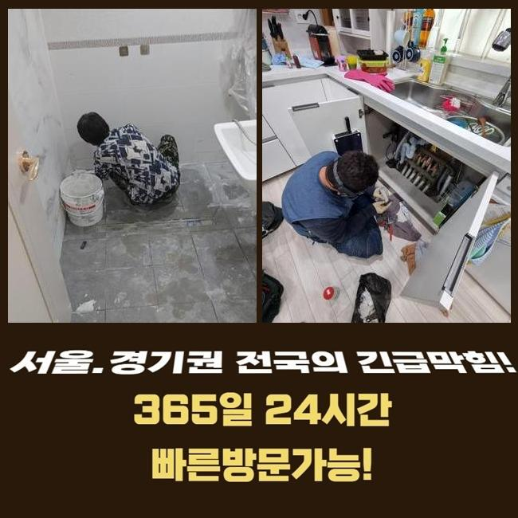
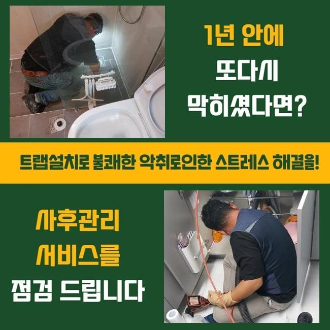
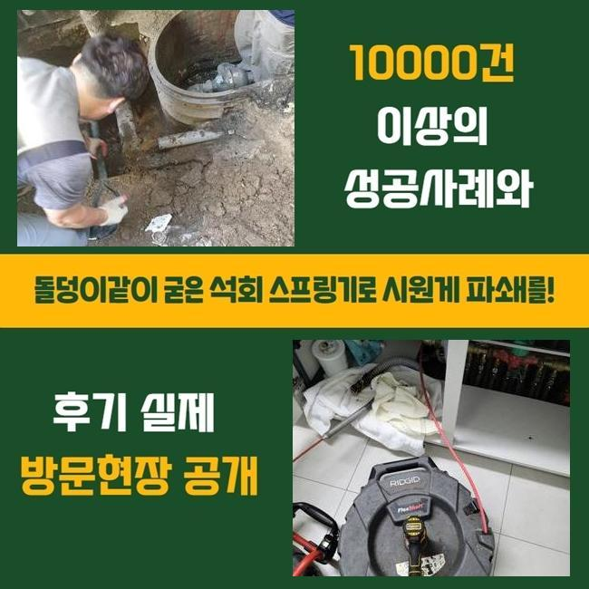
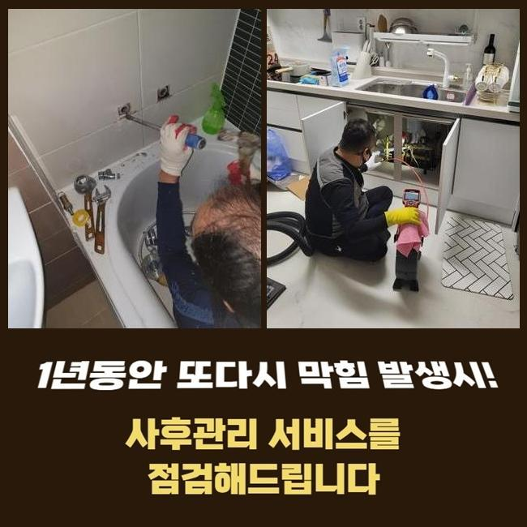
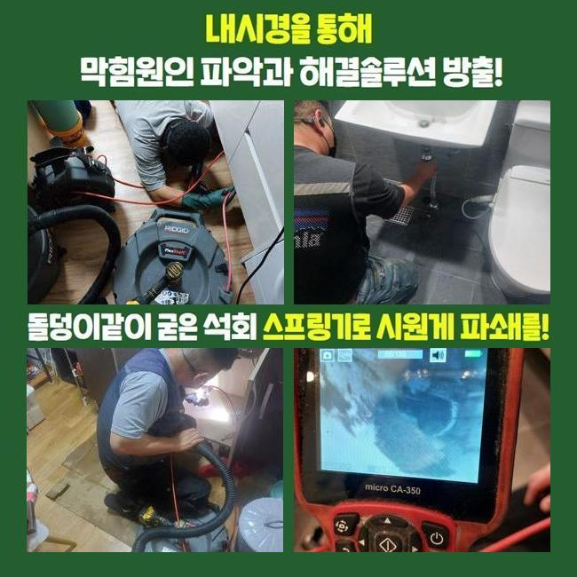

🏠 양주 유양동하수도뚫음 고암동 횡주관청소 출장수리
양주 유양동 싱크대막힘 전문 시공 후기

📋 작업 개요
- 위치: 양주 유양동, 유양동, 양주
- 서비스 유형: 싱크대막힘, 하수구막힘, 배관막힘, 맨홀막힘, 누수수리, 역류해결, 뚫는업체, 배관청소, 고압세척
- 작업 일시: 2025. 6. 10. 12:32
- 업체명: 하수구수사대 (010-5615-2118)
🔍 문제 상황
양주 유양동하수도뚫음 고암동 횡주관청소 출장수리
하수관은 주택이나 매장과 같은 장소에 당연히 배치되는 시설로써 매우 중요합니다
폐수를 처리하는 시스템으로 쾌적한 일상을 유지하도록 도와주며 질병의 발생으로부터 보호합니다
그러나 배수관이 막혀버리면 이물질이 누적되어 썩는 냄새가 나게되고 싱크대나 욕실에서 배수로 인한 문제점이 생기게 됩니다
이로 인해 하수가 역류하여 넘치거나 주방을 쓰지 못하게 되는 상황들이 발생하며 불편한 상황이 발생합니다
이른 오전에 배수관의 역류 상황으로 긴급한 연락을 받고 현장에 방문했어요
여러가구가 모인 주택에서 의뢰인의 주소지부터 찾아갔어요
확인해본 결과로는 고객님이 가정에서 물을 트실때마다 부동전에 연결 되어있는 하수관에서 하수가 넘치는 일들이 생겼습니다
주방쪽이나 화장실쪽에서 물을 흘려보내면 하수라인을 통해 올라오는 지독한 냄새도 심각했습니다

🔎 원인 분석
💡 전문가 진단: 정밀 진단 장비를 사용하여 슬러지의 고착 여부를 판명하고 타격/세척 작업을 실시했습니다.
문제의 정확한 내용을 체크하기 위해서 내시경기기를 통해서 본관의 속을 점검했습니다
오염물질이 쌓이면서 하수라인에서 지독한 악취까지 발생시키고 있었고 가정집의 내부로 오염된 물이 치솟는 현상들이 발생할 수도 있기때문에 신속한 시공에 들어갔어요
메인이 되는 중심관의 역할을 안내 해드릴게요
중심 맨홀는 생활을 하시면서 발생하는 오염된 물을 배출시키는 중심 역할을 합니다
만약에 메인 배수구가 막히게되면 배관 안에서부터 넘친 물과 이물질이 누적되며 부동전쪽의 배수관에서 역류하는 상황까지 일어납니다
이러한 때에는 안쪽에서 배수구만 확인한다고 해서 상황을 해결하기 어렵기때문에 중심이 되는 본관을 수리해야지만 배수등이 정상적으로 가능합니다
일반적으로 생기는 문제들은 어렵지 않게 해결하실 수도 있지만 관경이 넓은 본관은 고압세척장치를 써서 딱딱하게 변한 오염물질을 세척합니다
고압세척장치의 다양한 크기의 선은 배수라인의 꺾인 부위까지 모두 닿기때문에 신속하고도 정확하게 청소가 가능해요
메인의 배관에 고압장비를 사용해 음식찌꺼기와 불순물을 제거했어요
이후에 내시경장비를 이용해서 하수가 잘 배출되는지 확인했어요

🔧 작업 과정
의뢰인께서 모니터를 함께 보시면서 배수관이 완벽히 세척되어 통수가 잘되는 것을 보시고 마무리까지 부탁 하셨어요
다음 현장도 이어서 고장난 하수설비를 수리했어요
이번에는 베란다에서 하수가 역류하는 상황으로 불순물이 섞여 올라와서 고약한 냄새를 풍기는 상태였습니다
보통은 세면대 밑부분이나 세탁실의 배수관을 통하여 라인 전체를 청소하는게 일반적인 경우지만 이번엔 P트랩이 설치되어 있는 상태라서 난관에 봉착했어요
P트랩같은 경우 냄새나 벌레등의 유입을 막는것에 유리하겠지만 모양상 노폐물이 자꾸 쌓여 배수관의 막힘사고를 일으키는 원인을 제공합니다
이러한 경우엔 고압세척장비의 사용이 불가한 구조인 확률이 높습니다
노즐선을 투입할 수 없으므로 고객께 더이상의 비용등을 발생시키지 않고자 효과적인 해결법을 생각했습니다
복잡하고 어려운 트랩의 구조상 고압세척기기를 활용하면 배수관이 손상될 수 있으므로 샤프트장비를 활용해 작업을 이어나갔습니다
샤프트기는 회전하는 힘을 이용하여 하수라인 내부에 누적 되어있는 이물질들을 세척합니다
샤프트기기는 배수라인을 긁거나 피해주지 않으면서 끝부분까지 청소할 수 있어요
기기의 끝부분에 부드러운 장비를 결합하여 이물질들을 분쇄할 수 있어서 곡선의 구간에도 투입 할 수 있어서 하수라인의 깊은 곳에 쌓여있는 이물질도 완벽하게 청소합니다
한두번의 작업으로는 완전하게 세척되지 않았으므로 샤프트기기를 계속적으로 재투입하여 변형되어버린 찌꺼기를 세척했습니다
하수구 세척이 끝난 후에 배수의 흐름이 정상적으로 순환되고 있는지 체크하였고 사례자님께서도 역류사고가 발견됐던 배수구를 직접 보시고나서야 안심하셨습니다
배수관에 문제가 생겼을때 바로 대응하지 않으면 하수라인 내부에 누적 되어있는 이물질들이 썩게되면서 고약한 냄새가 생겨나고 통수가 원활하게 되질 않아서 오수가 거꾸로 올라오는 상황이 일어나게 됩니다
하수라인 안쪽에서 압력을 받으면 하수라인 벽이 피해를 입으며 누수와 같은 상황으로 발전되며 고객님의 비용적인 부담감 상승과 시간 손해까지 발생합니다


✅ 작업 완료
배수관 역류상황이 생겼다면 전문적인 업체에 전화하셔서 빠른 대응방법을 취하는게 중요해요
비슷한 현장 두 곳에서 하수관 역류사고를 처리했고 배수관의 지독한 냄새 청소까지 완수했어요
사례자님의 생활 속 습관등을 고치실 것을 안내드리고 하수설비의 이상이 재발하는 경우가 없게끔 한번 더 조치했습니다
배관의 문제등이 발생하셨다면 밤이든 낮이는 저희 전문가에게 문의전화 주시면 신속하고 정확하게 처리 해드리겠습니다



⚠️ 베란다 누수 및 방수 관리 방법
- ✅ 비가 많이 올 때 창틀 주변이나 아래층 천장에 얼룩이 생기는지 정기적으로 확인해 보세요.
- ✅ 우수관 주변 실리콘 마감이 들뜨거나 깨진 틈새가 있는지 손상 여부를 수시로 체크하세요.
- ✅ 베란다 바닥 타일의 줄눈(메지)이 소실되면 그 틈으로 물이 침투하여 누수가 유발됩니다.
- ✅ 누수 의심 증상 발견 시 방치하면 아래층 손실이 커지므로 즉시 전문가의 진단을 받으십시오.
💡 핵심 정리
- 확실한 장비 작업(내시경 점검 및 샤프트 스케일링)으로 원인을 뿌리 뽑습니다.
- 작업 후 1년 이내에 동일한 부위 재발 시 100% 무상 A/S 서비스를 보장합니다.
- 서울 · 경기 · 인천 전 지역에 24시간 언제든 긴급 출동할 수 있도록 항시 대기 중입니다.
❓ 자주 묻는 질문 (FAQ)
🚨 양주 유양동 싱크대막힘 문제로 고민이신가요?
정확한 원인 진단과 확실한 시공으로 재발 없는 해결을 약속드립니다.
24시간 긴급 출동 | 서울 · 경기 · 인천 전지역 | 1년 내 재발 시 무상 A/S